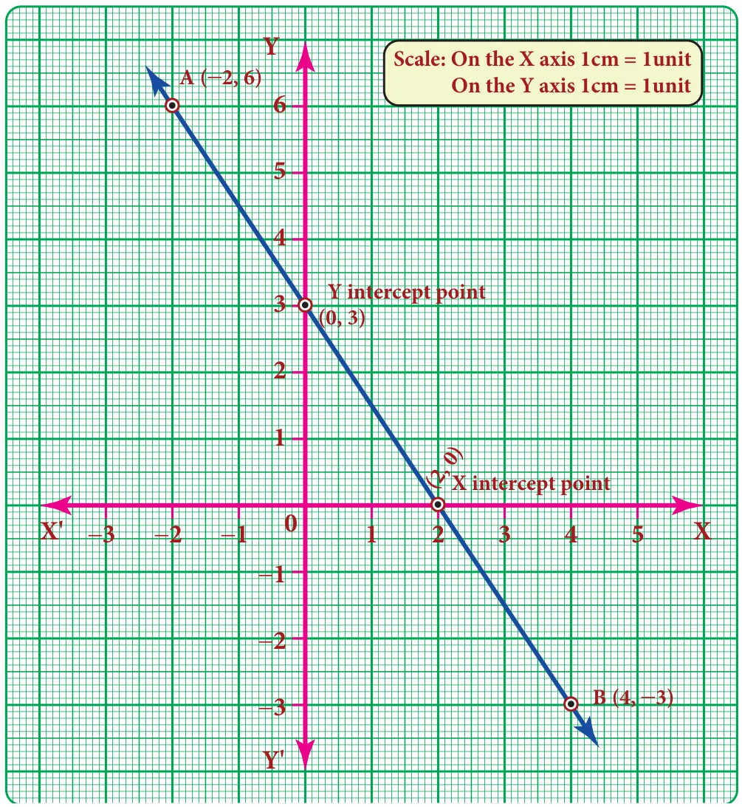
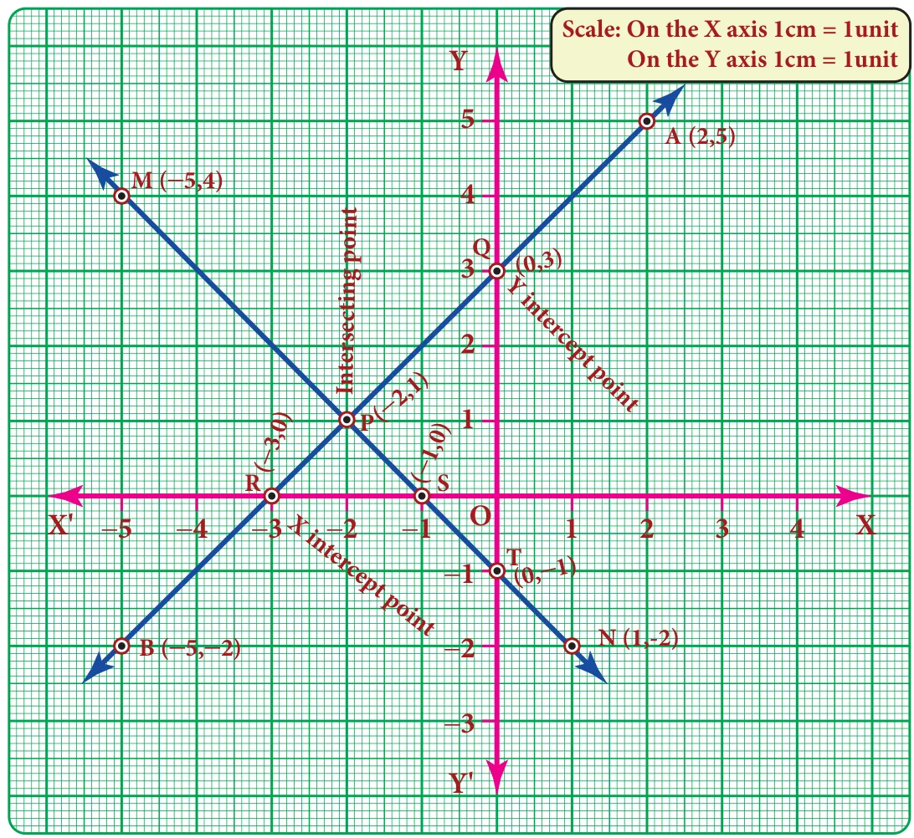
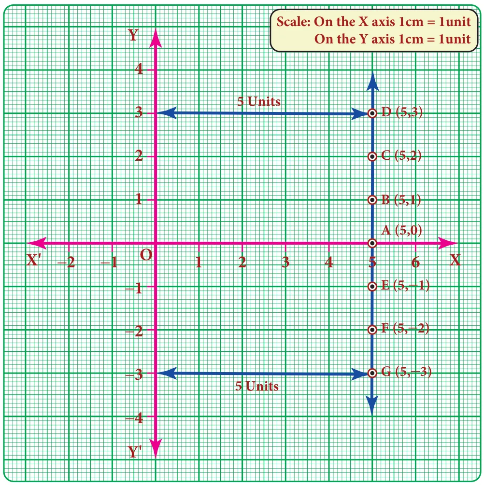
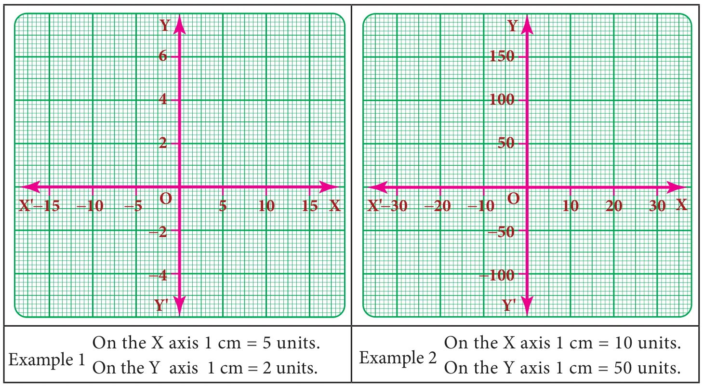

Now, we know how to plot the points on the graph. The points may lie on the graph in different order. If we join any two points we will get a straight line.
Example 3.41
Draw a straight line by joining the points A \((-2,6)\) and B \((4,-3)\)
Solution:
The given first point A \((-2,6)\) lies in the II quadrant and plot it. Second point B \((4,-3)\) lies in the IV quadrant and plot it.
Now join the point A and point B using scale and extend it. We get a straight line.
Note:
The straight line intersects X axis at \((2,0)\) and Y axis at \((0,3)\).

Example 3.42
Draw straight lines by joining the points A\((2,5)\) B\((-5,-2)\) M\((-5,4)\) N\((1,-2)\) also find the point of intersection
Solution:
Plot the first pair of points A and B in I and III quadrants. Join the points and extend it to get AB straight line. Plot the second pair of points M and N in II and IV quadrants. Join the points and extend it to get MN straight line.

Now, both lines are intersect at P\((-2,1)\)
(i) The line AB intersect the coordinate axis, ie) \(x\)-axis at R\((-3,0)\) and y-axis at Q\((0,3)\)
(ii) The line MN intersect the coordinate axis, ie) \(x\)-axis at S\((-1,0)\) and y-axis at T\((0,-1)\)
3.9.8 Line parallel to the coordinate axes
- If a line is parallel to the X-axis, its distance from X axis is the same and it is represented as \(y = c\) .
- If a line is parallel to the Y-axis, its distance from Y axis is the same and it is represented as \(x = k\). (Here c and k are constants)
Example 3.43
Draw the graph of \(x = 5\)
Solution:
\(x=5\) means that \(x\)-coordinate is always 5 for whatever value of y-coordinate. So we may give any value for y-coordinate and this is tabulated as follows.
| X | \(5\) | \(5\) | \(5\) | \(5\) | \(5\) | \(x=5\) is given (fixed) |
|---|---|---|---|---|---|---|
| Y | \(-2\) | \(-1\) | \(0\) | \(2\) | \(3\) | Take any value for y (Why?) |

Note
\(x = 0\) represents the Y axis
\(y = 0\) represents the X axis
Think
Which of the points \((5,-10)\) \((0,5)\) \((5,20)\) lie on the straight line X = 5?
The points are \((5,-2)\) \((5,-2)\) \((5,0)\) \((5,2)\) \((5,3)\). Plot the points in the graph and join them. We get a straight line parallel to Y axis at a distance of 5 units from the Y axis.
3.9.9 Scale in a graph
There will be situations in drawing a graph where ‘y’ is a big multiple of ‘x’ and the usual graph in units may not be enough to locate the ‘y’ coordinate and vice-versa. In this situation, we use the concept of scale in both the axes as per the need. Represent a convenient scale at the right side corner of the graph. A few examples are given below.
